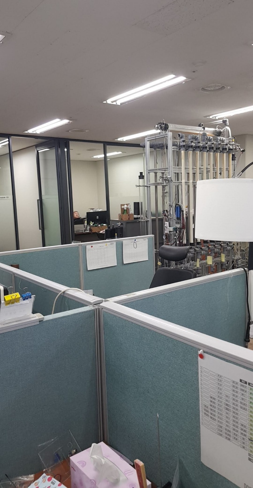
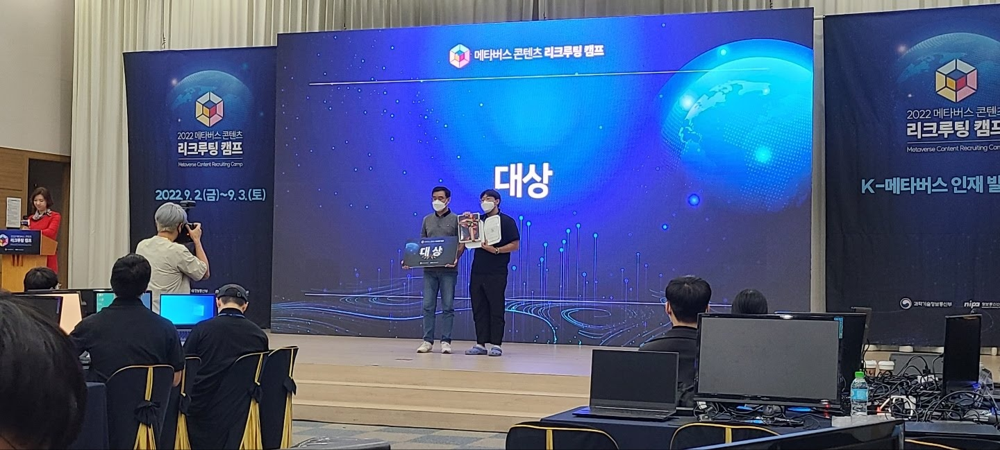

사회문제의 현장에서
프로젝트를 만드는 사람
사회복지대학원에서 사회적기업을 전공하고, 사회연대은행(마이크로크레딧)에서 3년간 경영지원을 담당했습니다. 소상공인·청년 지원사업의 용역 입찰부터 운영까지 기획·실행하며, 사회적 가치와 비즈니스 운영을 동시에 이해하는 실무자입니다.
사회복지 석사 · 사회적금융기관 3년 · 사회복지사 1급 —
현장 감각과 기획·실행력을 갖춘 CSR 실무자
사회복지대학원에서 사회적기업을 전공하고, 사회연대은행(마이크로크레딧)에서 3년간 경영지원을 담당했습니다. 소상공인·청년 지원사업의 용역 입찰부터 운영까지 기획·실행하며, 사회적 가치와 비즈니스 운영을 동시에 이해하는 실무자입니다.

마이크로크레딧 기관의 여신·채무 데이터를 엑셀에서 커스텀 ERP(Tibero/Nexacro)로 전환. 회계계정 200개를 직접 설계하고, 데이터 마이그레이션 정합성을 검증. 사회적 임팩트 측정의 기반이 되는 데이터 관리 체계를 구축했습니다.
마이크로크레딧 여신·채무 프로세스 분석. 부서별 요구사항 인터뷰. 회계계정 체계 설계.
엑셀 → Tibero DB 마이그레이션. 부서별 자료 취합·검수. 데이터 정합성 반복 검증.
관리회계 전환 완료. 결산 2일 단축. 사회적 임팩트 측정을 위한 데이터 인프라 확보.

소상공인·청년 대상 지원사업의 용역 입찰 10건+ 풀사이클(RFP→공고→평가→계약) 수행. 8개 외주업체의 계약·정산·SLA를 총괄하며, 사업팀·회계팀 등 내부 부서 소통·조율을 담당. 재계약 협상으로 비용 30% 절감.

과학기술정보통신부 · 2022
사회복지사 1급 보유. 사회적금융기관에서 취약계층·소상공인·청년 지원사업을 직접 경험. 사회문제의 구조를 이해하는 실무자.
ERP 도입을 A to Z 전담. 용역 입찰 10건+. 기획→실행→검수까지 프로젝트 전 과정을 주도한 경험.
사업팀·회계팀·경영진·외주 8개사와 일상 커뮤니케이션. 이해관계가 다른 조직 사이에서 조율하는 역할.
사회복지대학원 사회적기업 전공 석사. 사회적 가치 측정·CSR 이론을 현장 경험과 결합할 수 있는 역량.